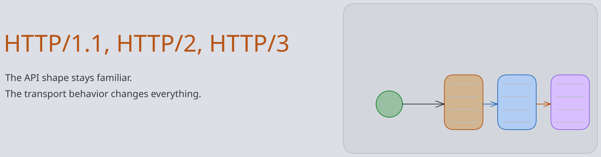
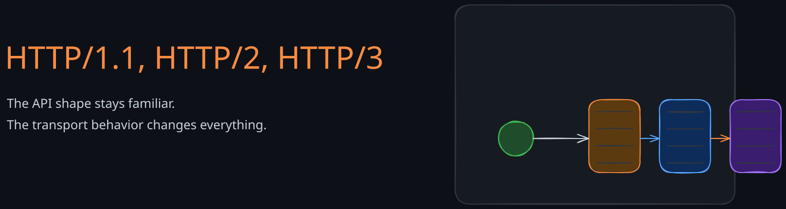
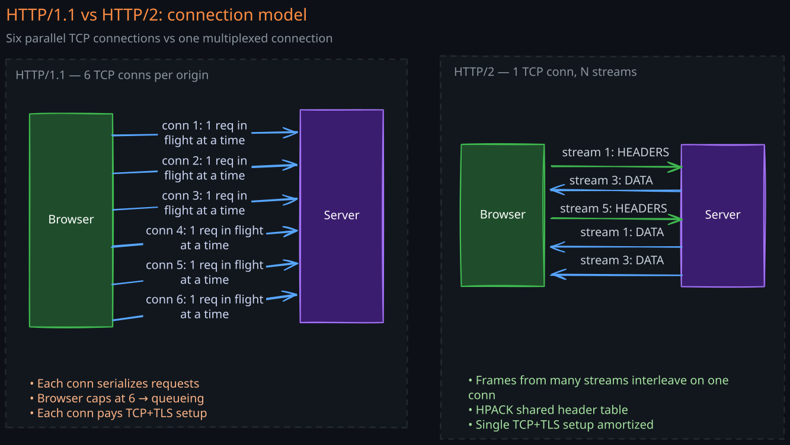
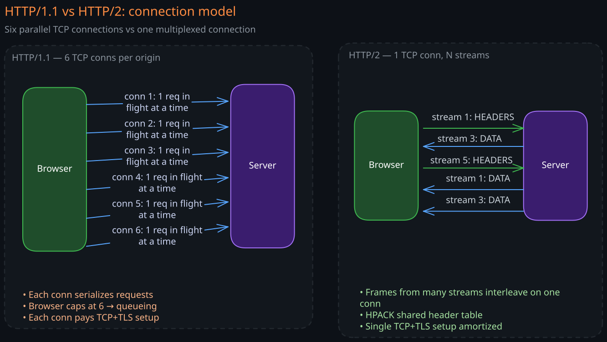
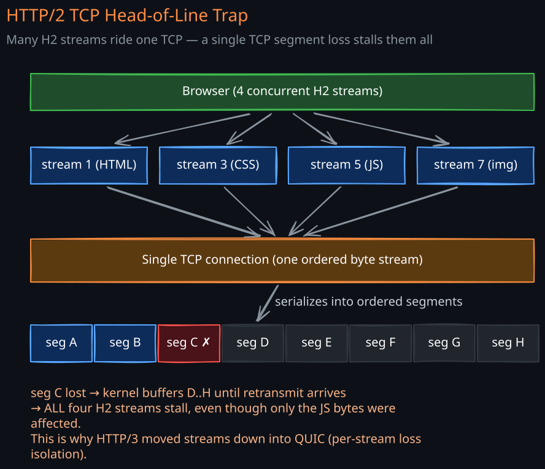
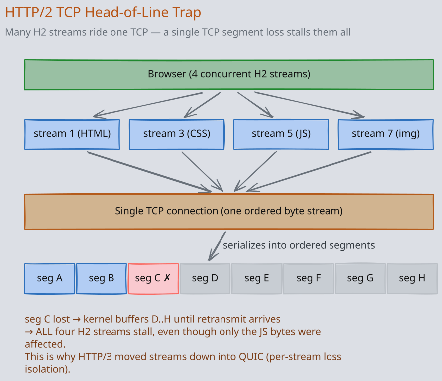

HTTP/1.1, HTTP/2, and HTTP/3
HTTP is the wire format every web system speaks. The three deployed versions look similar at the API level (verbs, headers, status codes) but differ profoundly in how they move bytes over the network. A staff engineer must be able to reason about which version is fronting their service, why latency looks the way it does, and what flipping the version actually changes.
1. The Common Surface
All three versions share the same semantic model defined in RFC 9110:
- A request has a method (GET/POST/PUT/DELETE/…), a target URL, headers, and an optional body.
- A response has a status code, headers, and an optional body.
- Headers are case-insensitive key/value pairs.
- Caching, content negotiation, authentication, conditional requests, and ranges all work identically across versions.
What differs is the wire encoding, the connection model, and the multiplexing semantics. Pick the version you serve based on what those three things cost on your network.
2. HTTP/1.1 — The Text Protocol
2.1 Wire Format
HTTP/1.1 is plain ASCII over a TCP connection:
GET /users/42 HTTP/1.1\r\n
Host: api.example.com\r\n
Accept: application/json\r\n
\r\n
The response is similarly text. Bodies are framed by Content-Length or Transfer-Encoding: chunked. The parser is simple, debuggable with telnet, and trivially proxied.
2.2 Connection Model
One connection carries one request at a time. After the response, the connection can be reused (Connection: keep-alive, the default in HTTP/1.1) for the next request. But the next request cannot start until the current response has finished.
2.3 Pipelining Is Effectively Dead
HTTP/1.1 allows pipelining (send request 2 before response 1 arrives), but responses must come back in request order. One slow request blocks every queued one — head-of-line blocking at the application layer. Browsers disabled pipelining in practice; almost no production system uses it.
2.4 How Browsers Work Around It
Because each connection serializes requests, browsers open 6 parallel TCP connections per origin. This is the entire reason CSS sprites, domain sharding, and image atlases became performance techniques: cram more resources behind fewer requests because connections are the bottleneck.
2.5 Where HTTP/1.1 Still Wins
- Proxy and CLI tool compatibility —
curl, every middlebox, every WAF understands it natively. - Simpler debugging.
- Streaming uploads/downloads with
chunkedencoding work everywhere. - Lower CPU than HTTP/2 for very small numbers of requests.
For an internal service with a handful of long-lived clients, HTTP/1.1 + keep-alive is still entirely reasonable.
3. HTTP/2 — Binary, Multiplexed, One Connection
3.1 Wire Format
HTTP/2 is binary, framed, and runs over a single TCP+TLS connection. Frames carry typed payloads (HEADERS, DATA, SETTINGS, WINDOW_UPDATE, PING, …) and each frame is tagged with a stream ID.
A stream is a logical request/response pair. Many streams interleave over one connection.
3.2 The Big Wins
- Multiplexing: many concurrent requests on one TCP connection, with no per-connection RTT or TLS handshake overhead. The 6-connection-per-origin browser hack disappears.
- Header compression (HPACK): a stateful compression scheme that keeps a shared dynamic table of recently-seen headers. Repeated headers (
User-Agent, cookies, auth tokens) cost a single index byte after the first request. On cookie-heavy sites this saves real bytes. - Server push (deprecated in practice): server proactively pushes resources the client will need. Removed from Chrome in 2022 because cache-aware preload links work better.
- Stream prioritization: clients hint which streams matter more (CSS before images).
- Flow control per stream and per connection: each side advertises window credits.


3.3 The TCP Head-of-Line Trap
HTTP/2 streams are independent at the HTTP layer, but they all ride one TCP byte stream. A single packet loss stalls every multiplexed stream until the retransmit arrives, because TCP must deliver bytes in order. On a clean wired link this is invisible. On a lossy mobile network, HTTP/2 can be slower than HTTP/1.1 with 6 connections, because HTTP/1.1’s losses only block one of six streams.
This is the central motivation for HTTP/3.


3.4 Operational Gotchas
- Connection coalescing: a single HTTP/2 connection can serve multiple origins if the TLS cert covers them. Browsers do this aggressively; load balancers must, too, or you lose the multiplexing win.
- Long-lived connections: HTTP/2 connections live for hours. A rolling backend deploy must drain
GOAWAYproperly or clients hang on dead connections. - HPACK on multi-tenant proxies: the dynamic table is per-connection, so a CDN sharing connections across tenants can leak header info between tenants. Mitigations include resetting the table or partitioning connections.
- Flow control deadlocks: misconfigured
INITIAL_WINDOW_SIZE(default 64 KB per stream) caps single-stream throughput to64 KB / RTT. On a 100ms link that is 640 KB/s. Tune for large transfers.
3.5 h2 vs h2c
- h2 runs over TLS. ALPN negotiates HTTP/2. This is essentially the only deployed variant on the public internet.
- h2c is HTTP/2 cleartext. Useful inside a cluster or behind a service mesh, but no browser supports it.
4. HTTP/3 — HTTP Over QUIC
HTTP/3 keeps the same semantics and most of the HTTP/2 framing concepts (streams, prioritization, HPACK is replaced by QPACK), but moves them onto QUIC instead of TCP. See the QUIC note for the transport details.
4.1 What Changes Compared to HTTP/2
- No transport-level head-of-line blocking: QUIC streams are independent at the loss layer too. One lost packet only blocks the streams whose bytes were in that packet.
- 0-RTT resumption: a returning client sends the request with the first packet. Saves a full RTT — meaningful on mobile.
- Connection migration: connection ID, not 4-tuple, identifies the session. Wi-Fi → LTE handoff does not break the connection.
- Always encrypted: there is no h3c. TLS 1.3 is mandatory and even transport metadata is protected.
- QPACK replaces HPACK: header compression that survives out-of-order stream delivery. QPACK splits the dynamic table updates from the request streams so a header table update cannot stall later requests.
4.2 The Costs
- UDP rate-limiting / blocking: some enterprise and mobile networks throttle UDP. You must keep HTTP/2-over-TCP as a fallback (advertised via the
Alt-Svcheader). - CPU: per-packet encryption in user space costs more than TCP+TLS kernel paths. Hardware offloads (UDP GSO/GRO, AES-NI) have closed most of the gap.
- Debugging tooling: smaller ecosystem than HTTP/2.
wireshark,curl --http3, Chrome’schrome://net-exportare the practical toolchain.
4.3 The Alt-Svc Handshake
A typical deployment serves HTTP/2 over TCP on port 443 and advertises HTTP/3 availability:
Alt-Svc: h3=":443"; ma=86400
The client tries HTTP/3 on subsequent requests, falling back if it fails. This is how Cloudflare, Google, and Meta rolled out HTTP/3 without breaking anyone.
5. Side-by-Side
| Property | HTTP/1.1 | HTTP/2 | HTTP/3 |
|---|---|---|---|
| Transport | TCP | TCP | QUIC (over UDP) |
| Wire format | Text | Binary frames | Binary frames |
| Multiplexing | No (6 connections) | Yes (one connection) | Yes (one connection) |
| Head-of-line blocking | Per-connection | TCP-level (across streams) | None across streams |
| Header compression | None | HPACK | QPACK |
| Encryption | Optional (HTTPS) | De facto required | Mandatory |
| Connection setup | 1 RTT TCP + 1–2 RTT TLS | 1 RTT TCP + 1 RTT TLS 1.3 | 1 RTT (0 RTT resumed) |
| Connection migration | No | No | Yes |
| Server push | No | Yes (deprecated) | Yes (rare in practice) |
| 0-RTT | No | No | Yes |
| Browser support | Universal | Universal | ~95% modern browsers |
| Proxy / middlebox support | Universal | Excellent | Improving |
6. How to Pick
6.1 Public-facing web app or API
HTTP/2 minimum, HTTP/3 with Alt-Svc advertising and HTTP/2 fallback. Cloudflare, Akamai, and AWS CloudFront flip this on with a checkbox; do it.
6.2 Mobile-heavy traffic
HTTP/3 is a real win — 0-RTT, no HoL on lossy radio, connection migration on cell handoff. Facebook, YouTube, and Snapchat saw measurable retention improvements when they shipped HTTP/3.
6.3 East-west microservices in a datacenter
HTTP/2 (or gRPC, which is HTTP/2 underneath) is the right default. HTTP/3 adds CPU cost on a network where loss and roaming don’t exist. The exception: large blob transfers across regions where loss matters.
6.4 Streaming uploads / large files
HTTP/2 and HTTP/3 are both fine; tune INITIAL_WINDOW_SIZE aggressively. HTTP/1.1 + chunked is the most compatible if the destination is a quirky storage gateway.
6.5 CLI tools, server-to-server simple calls
HTTP/1.1 is still fine. Don’t over-engineer.
7. Edge Cases and Pathologies
- HTTP/2 connection coalescing breaking auth: two origins served by the same wildcard cert share a connection. A misconfigured backend trusts the SNI but the actual request is for a different
:authority. PinHost/:authoritychecks. - GOAWAY storms: a backend restart sends
GOAWAYto thousands of long-lived HTTP/2 connections at once. Clients reconnect in a thundering herd. Stagger restarts; use connection draining at the LB. - QUIC amplification attack: a server replying to a spoofed UDP source IP could be used to amplify DDoS. QUIC limits unverified data to 3× the received bytes before address validation.
- HPACK bombing: a malicious client sends headers that bloat the dynamic table. Cap
SETTINGS_HEADER_TABLE_SIZE. - HTTP/3 over restrictive networks: corporate proxies often allow only TCP/443. Clients must time out the QUIC attempt fast and fall back. Misconfigured clients can add seconds of latency on every request.
8. Related Notes
- TCP-UDP-QUIC — the transports underneath
- TLS-and-mTLS — encryption layer (TLS is mandatory for h2/h3 in practice)
- API-Protocols-Compared — REST vs gRPC vs GraphQL vs WebSockets vs SSE
- API-Gateway — where version translation often happens
Revision Summary
- HTTP/1.1: text, one request per connection at a time, browsers open 6 parallel connections to compensate.
- HTTP/2: binary, multiplexed streams over one TCP+TLS connection with HPACK; suffers TCP-level head-of-line blocking on lossy links.
- HTTP/3: HTTP/2 semantics moved onto QUIC over UDP; no HoL across streams, 0-RTT resumption, connection migration, mandatory encryption, higher CPU.
- Public-facing and mobile-heavy traffic should be on HTTP/2 minimum and HTTP/3 with TCP fallback; east-west microservices usually stay on HTTP/2.
- The hard pathologies are operational: GOAWAY storms, flow-control window tuning, QUIC fallback on UDP-hostile networks, HPACK isolation in shared proxies.
Deep Understanding Questions
- You move a public API from HTTP/1.1 to HTTP/2 and see per-request latency increase on a small subset of mobile users. What is most likely happening at the TCP layer and which version would fix it?
- A browser opens an HTTP/2 connection to
a.example.comand reuses it forb.example.combecause the cert covers both. Your backend authenticates byHostheader. Walk through a security bug this could create and how to harden against it. - HTTP/3 reduces handshake RTT but uses more CPU per byte. For an internal datacenter service with 1ms RTT and 0 loss, why is HTTP/2 almost always the right choice?
- Your HTTP/2 backend pushes 4 MB responses but throughput tops out at 640 KB/s on a 100ms RTT link. What is the configured flow-control window and how do you fix it?
- A backend deploys a new version and
GOAWAYs 50,000 long-lived HTTP/2 connections. The next minute, the new pods melt. Diagnose the cascade and propose two mitigations at the LB layer. - HTTP/3 is “always encrypted” — argue why this matters for the evolution of the protocol, not just for user privacy.
- Why was HTTP/2 server push deprecated in browsers, and what mechanism replaced it for the same use case?
- A corporate firewall drops all UDP. Your HTTP/3-enabled client adds 2 seconds to every request from inside that network. What is the client doing wrong and what is the correct fallback behavior using
Alt-Svc?
Discussion
Comments are open. Anonymous is fine — pick any name and post. Comments appear after a quick moderation check.